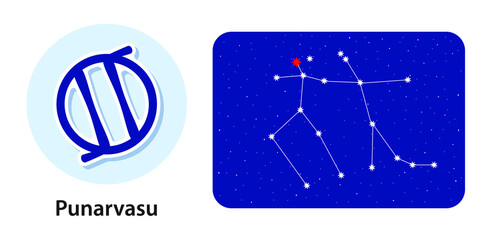

Nakshatra Punarvasu
Punarvasu Nakshatra
Characteristics male
Males born in Punarvasu Nakshatra are believed to be very spiritual and religious. They tend to have a good nature and behaviour when they are young, but as they grow up, they slowly start adopting a more crass and arrogant behaviour. As they become an adult, they slowly become less likeable, and because of this, being friends with them can be a little stress-inducing. They can sometimes crave for something they cannot have, but they can’t be called materialistic as they are generally satisfied with what they already have. Something that is non-negotiable for them is illegal activities, and neither would they do it themselves nor would they allow someone close to them to do it. Along with that, they can be very generous and helpful to others.Profession male
Punarvasu male can not work in any business where he will have to partner up with someone as he is a lone wolf, hence why he won’t be able to gain success in the field of business. Other than that, they will gain success in being a teacher or a stage performer being the most suitable for them. Till the age of 32, they should become more careful when making important decisions because of unfavourable stars. Because of their honesty, success in business and making wealth is very hard for them.Compatibility male
Punarvasu male has great respect and regards for their parents and teachers but having a fulfilling marriage is hard for them. Chances of a failed marriage and second marriage are high for them, and frustration and anxiety regarding their spouse’s health may cause them an unhappy life. There might also be frequent disagreements with other family members, which might ultimately cause them mental health issues.Health male
Males of this nakshatra are one of the healthiest of all as they have a very strong digestive system and tend to drink a lot of water and take care of themselves. Although they get concerned about their health with the most subtle signs of illness.Characteristics female
Punarvasu females can have a sharp tongue as they like to speak their mind quite often resulting in frequent fights and arguments among friends and family. This also results in many people holding resentment against her. But deep inside, she has a heart of gold and knows to show respect to whoever she feels is deserving. She likes to live in comfort, hence she will have all forms of materialistic comfort in her home and will also have many maids and servants.Profession female
Females of this nakshatra can have a career in the show business as they have a real love as well as talent in music. They will also have a keen interest in various folk dances and will want to be certified in these forms of art. There are chances that if they ever decide to take these talents and make them their profession, they will gain much fame and money as well.Compatibility female
Punarvasu females have great luck when it comes to their life partners because they will have a very good-looking husband, and along with that they will also have a very loving married life. Although there might come times when they will have disagreements, but none too serious to be of concern. Females of this nakshatra will have a very good connection with their husband, and along with him, they will lead a healthy and happy married life.Health female
Punarvasu females will have to face many health problems such as pneumonia, indigestion, ear pain, goitre, jaundice, or even tuberculosis. This is because they are one of those people who do not take much care of their health resulting in serious illness. To avoid this, females of this nakshatra should give more attention to their health.Punarvasu Nakshatra Padas
1. Pada 1st: Dominated by Mars, the first pada of punarvasu nakshatra lies in the Aries navamsa. Being able to work in a team should be of utmost concern as that is what will bring success for this nakshatra. There is also a high chance of travelling and to have a mostly adventurous life.
2. Pada 2nd: Ruled by Venus, this pada of Punarvasu Nakshatra leans more towards Taurus navamsa. The focus lies on materialistic comfort and being able to have a life that is fixed as the earth itself. To fulfil the desire to have a life of comfort is the main concern.
3. Pada 3rd: Dominated more by Mercury, the third pada of this nakshatra lies in Gemini navamsa. The people born in this pada are intelligent and use their brains to the fullest. The focus is mostly on imagination and science.
4. Pada 4th: Dominated by the Moon, this nakshatra falls in the Cancer navamsa. They will have a philanthropic nature. The main concern is of helping the ones in need and satisfying the soul, a life apart from materialistic desire.